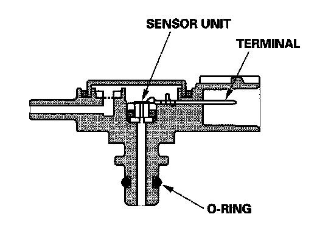

Evaporative Emissions System: Description and Operation
Evaporative Emission (EVAP) Control SystemRefer to the system diagram to see a functional layout of the system.
EVAP Canister
The EVAP canister temporarily stores fuel vapor from the fuel tank until it can be purged from the EVAP canister into the engine and burned.

EVAP Canister Purge Valve
When the engine coolant temperature is below 140 °F (60 °C), the PCM turns off the EVAP canister purge valve which cuts vacuum to the EVAP canister.

Fuel Tank Pressure (FTP) Sensor
The FTP sensor converts fuel tank absolute pressure into an electrical input to the PCM during the EVAP leak check.

EVAP Canister Vent Shut Valve
The EVAP canister vent shut valve is on the EVAP canister.
The EVAP canister vent shut valve controls the venting of the EVAP canister.
Evaporative Emission (EVAP) Control Diagram
The EVAP controls minimize the amount of fuel vapor escaping to the atmosphere. Vapor from the fuel tank is temporarily stored in the EVAP canister until it can be purged from the canister into the engine and burned.
- The EVAP canister is purged by drawing fresh air through it and into a port on the intake manifold. The purging vacuum is controlled by the EVAP canister purge valve, which operates whenever engine coolant temperature is above 140 °F (60 °C).
- During refueling, the fuel tank vapor control valve opens with the pressure in the fuel tank, and feeds the fuel vapor to the EVAP canister.